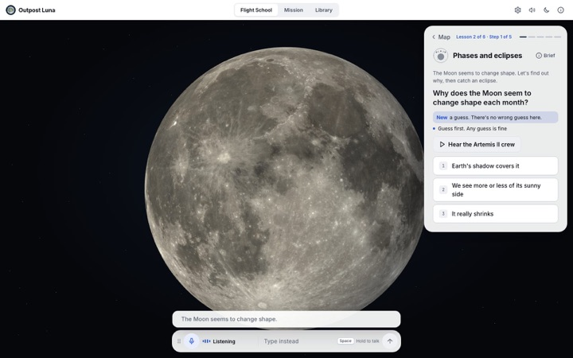
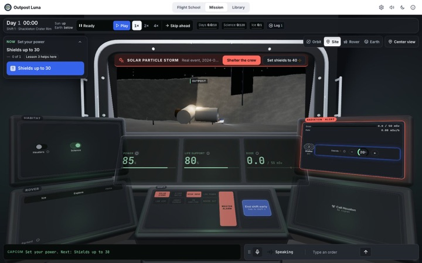
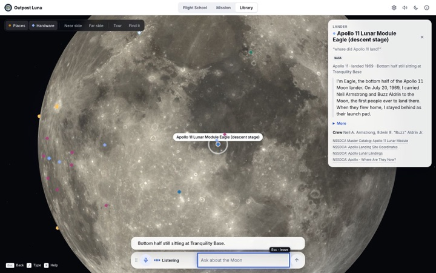

The app
Learn it, run it, explore it.
Artemis II flew around the Moon in April 2026. You train to run a south-pole base for the crews who come next.
-

Flight School
Spoken lessons with CAPCOM and real Artemis II crew audio.
-

Mission
Run the outpost for 10 days through real solar storms.
-

Moon Library
Hardware left on the Moon, each piece with its sources.
- Play your way
- Voice
- Tap
- Type
- Keyboard
- Game controller
- Hand gestures
NASA open data
Real missions, real Moon.
Every lesson and event traces to a NASA source.
- 74Artemis II crew clipsNASA Artemis audio
- 13Real solar storms, 2017–2025NASA DONKI
- 5South-pole sites, scoredLRO sunlight, Earth view, ice and slope
- 17NASA videos, 8 play offlineNASA SVS and NASA channels
- 36Pieces of hardware on the MoonNASA NSSDCA
- 10Days of hourly Sun and EarthJPL Horizons, per site
Built into the app. No NASA calls while it runs.
How it works
Voice AI that runs on your computer.
Our own speech and language models hear, check and decide each turn. No cloud.
Our on-device ear (Arc Transcriber Space) vs the off-the-shelf NVIDIA model it builds on, on held-out NASA audio. Full results
- Hears you, not the roomKnows when you're talking to the app.
- Keeps it cleanSwearing is masked, never graded or answered.
- Decides by rulesClear rules pick each move; a learned model trains alongside.
- Speaks in one voice889 recorded lines, plus your computer's own voice.
Swipe to see the whole diagram.
Privacy
Private by design.
No account. No cloud model. Nothing uploaded.
- On-device
- Every model runs on your computer.
- Mic
- Hands-free or push-to-talk. Audio is never stored.
- Camera
- Off until you turn on gestures.
- No account
- A call sign, kept on the device.
- Turn log
- Opt-in, text only. Never uploaded.
Privacy details
- The app window may only reach its own local servers. Everything else is blocked, apart from the NASA YouTube player.
- Hands-free listening is the default. Push-to-talk (hold Space) is in Settings.
- While the camera runs, a "Camera on" chip with a Turn off button is always visible. Frames are never saved or sent. No face recognition.
- Your call sign and all progress stay on the device.
- The turn log ("Help improve the voice guide") is off by default, redacts names, and "Delete what's saved" erases it.
- A diagnostics file is saved only when you ask, where you choose. No audio, no words.
- Check for updates asks GitHub only when you press it, or daily if you turn that on.
Team, challenge and credits
Team
Outpost Luna: Karan Singla and Bryan Pellom. We built the app and its on-device speech and language models.
Challenge
NASA Space Apps Challenge 2026: Build a Junior Astronaut Mission Trainer. Slides (PDF)
Credits
Moon: NASA/GSFC/ASU (LRO). Terrain: NASA LRO LOLA. Earth: NASA Blue Marble. Crew audio: NASA Artemis audio.
AI use
AI tools helped write code and draft lessons, and made the icon and some voices. The team checked every fact.
Machine-readable: ai-disclosure.json
AI use details
- Code: written with AI coding assistants. Commits made with them carry a co-author line. The team reviewed and tested every change.
- Writing: lesson text, "Why?" cards and CAPCOM lines were drafted with AI help. Every fact is checked against the NASA source it cites.
- Data: part of the speech model's training data is synthetic text-to-speech audio. Results are measured on held-out clips; the one synthetic test set is labelled as such.
- Images: the app icon and the team image were made with an AI image generator, with no NASA logos, flags or insignia. Moon and Earth imagery is NASA's.
- Audio: CAPCOM's 889 scripted lines were recorded from macOS's built-in Siri voice, which is computer-generated. Live replies use the computer's own voice. The optional Steer voice is AI text-to-speech. The launch film's learner lines are AI-generated speech.
- Not AI: NASA data, NASA video and crew audio, and app screenshots.